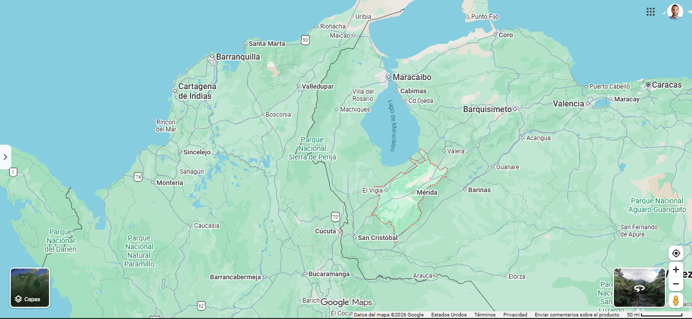

El mapa va dentro de un rectángulo de módulos cuadrados. Números arriba/abajo = columnas; letras izquierda/derecha = filas. Código 3e = columna 3, fila e. Hoy usamos 16×16 (estados); más adelante 32×32 (ciudades).
1. ¿Qué indica el número en la parte superior del mapa?
2. ¿Qué indica la letra a la izquierda o derecha?
3. ¿Cuántas columnas tiene la cuadrícula regional?
4. ¿En qué región está el estado Mérida?
5. ¿Cuál es la capital del estado Mérida?
6. Colorea el estado Mérida. ¿En qué módulo queda?
7. ¿La ciudad de Mérida coincide con el módulo del estado?
8. El estado Mérida está al sur de…
9. Columna 3 y fila e se escribe…
10. La cuadrícula de 32×32 se usará para…
11. ¿Cuál estado NO es vecino de Mérida?
12. ¿Quién fundó la ciudad de Mérida?
